PASS — это небольшой bash-скрипт, созданный Джейсоном Доненфельдом, хранящий пароли в обычных текстовых файлах, зашифрованных с помощью GPG. Официальный сайт — www.passwordstore.org
Может хранить в зашифрованном виде не только логины/пароли, но и любую текстовую информацию.
Шифрование всей информации производится с помощью GPG, запросы паролей осуществляет gpg-agent, за контроль версий и поддержку удаленного репозитория отвечает Git, а сама утилита написана на языке bash. Таким образом, у вас есть возможности, за которые можно не беспокоиться. На самом деле, если вы хотите, вы можете получить доступ к репозиторию Git и файлам Gnupg напрямую, вообще не используя PASS.
▍Пререквизиты для GPG, PASS, Pass for iOS:
На официальном сайте PASS www.passwordstore.org есть множество клиентов под разные OS.
▍Пререквизиты для Gitea:
Для того, чтобы настроить и развернуть связку PASS и Git, я использовал Gitea (свободный аналог github, gitlab).
Для разворачивания Gitea достаточно будет самых минимальных требований, например можно взять тариф Старт Хит (240р/мес. на момент написания статьи) на ruvds.com. К тому же у них есть услуга — 3 дня VPS на тест бесплатно. Можно развернуть Gitea на одноплатниках, хоть на малинке RaspberryPi (2,3,4 версий), хоть на банане Banana PI.
Подробно останавливаться в этой статье на установке Gitea не будем, есть подробнейшая документация со всевозможными способами установки:
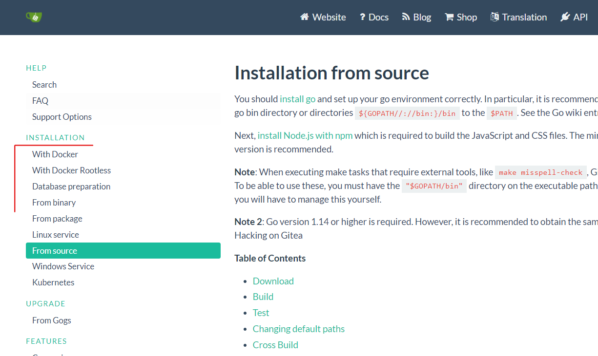
Документация Gitea — варианты установки
Привязку Gitea к собственному домену, установку SSL-сертификата в этой статье рассматривать не буду. Укажу лишь отличный бесплатный вариант, который я использовал:
Используемые данные Gitea в статье:
Gitea установлен на zil02.ml
login: gitlog
e-mail, указанный при создании gpg связки ключей: gitlog@zil02.ml
▍Настройка, установка GPG (GnuPG):
На странице со списком свободных OS можно выбрать приглянувшуюся —
www.gnu.org/distros/free-distros.html#for-pc я установил Dragora как основную Linux систему. У вас это может быть любая OS на ядре Linux. Самая распространенная Ubuntu, но это не значит, что самая безопасная. В Ubuntu на уровне ядра есть проприетарные компоненты, которые противоречат философии свободного программного обеспечения.
Итак, открываем терминал. Обновим репозитории и установим gpg и gnupg:
sudo apt update && sudo apt upgrade -y
sudo apt install gpg
sudo apt install gnupg
Смотрим версию установленного GPG:
gpg --version
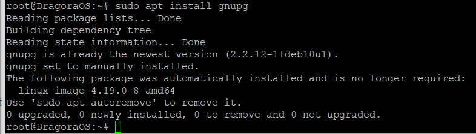
У меня версия gpg (GnuPG) 2.2.12
Для того чтобы посмотреть публичный и приватный ключи:
gpg -k #публичный ключ
gpg -K #приватный ключ
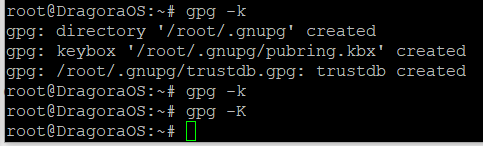
Убеждаемся, что ключей нет
Теперь давайте их создадим. Делается это командой:
gpg --full-generate-key
Выбираем — 1 (default)
Ставим максимальную длину — 4096
Не ограничиваем валидность ключа временем: ставим 0
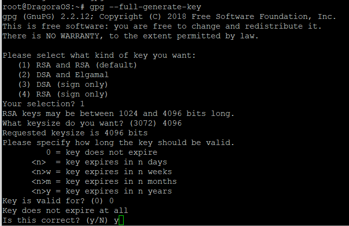Подтверждаем свой выбор.
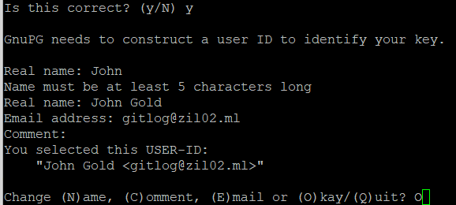
Вводим Имя, Фамилию, e-mail. Подтверждаем выбор.
Далее Вас спросят придумать мастер-пароль
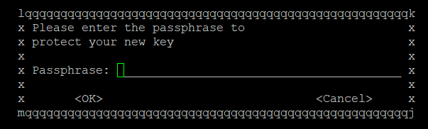
Это главный пароль для доступа в Вашей связке ключей! Делайте его максимально сложным и запомните, запишите в надежном месте.
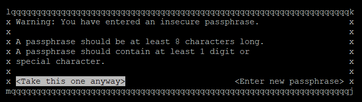
Введя легкий пароль, вы увидите сообщение:
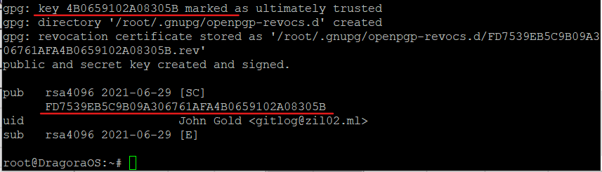
Ваш ключ создался!
▍Установим менеджер паролей PASS
Установим PASS:
apt install -y pass
Посмотрим, где у нас лежит PASS (в /usr/bin/pass):
which pass
Проинициализируем хранилище паролей, всю связку ключей, созданных ранее с e-mail: gitlog@zil02.ml:
pass init gitlog@zil02.ml
Создалась директория /.password-store
В этой директории будет лежать скрытый файл .gpg-id в нем будет одна строчка с идентификатором ключа. Именно им и будут шифроваться все ваши пароли.
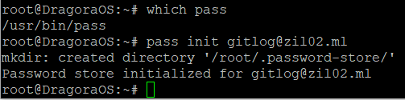
Попробуем добавить любую информацию в наш менеджер паролей PASS из консоли, для лучшего понимания!
PASS использует для хранения каждого пароля к сервису отдельный файл. Это очень удобно!
Например, добавим пароль на email:
pass insert Email/gmail.com
где Email — это папка, через ‘/’ gmail.com — текстовый файл с паролем.
Введем для примера пароль 1234
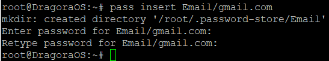
Создался зашифрованный бинарник gmail.com.gpg в директории /root/.password-store/Email
Для просмотра зашифрованного пароля вводим свой мастер-пароль от gpg ключа:
pass Email/gmail.com
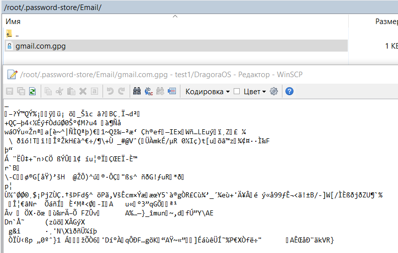
Проверим через редактор в WinCSP
Бинарник имеет нечитаемый вид
в PASS есть возможность сохранять пароли в ASCII.
В настройках Pass for iOS это Settings-> Advanced
включить опцию "Encrypt in ASCII-Armored"
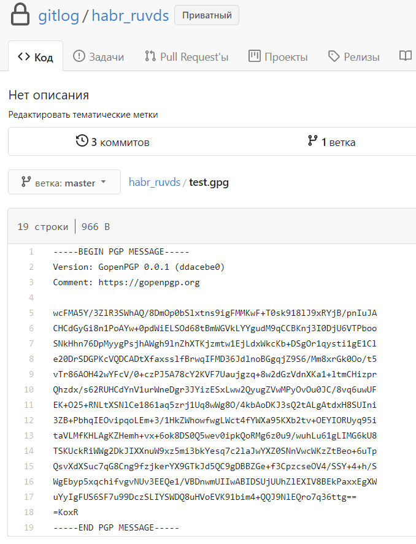
Тогда зашифрованные данные примут человеческий вид
▍Настройка Gitea:
Теперь нам нужно настроить Git (Gitea) на локальной машине, берем user и email из настроек gitea выше:
git config --global user.name “gitlog”
git config --global user.email “gitlog@zil02.ml”
На всякий случай указываем правильный путь до gpg:
git config --global gpg.program gpg2
вместо “gpg2” у вас может быть просто “gpg”
И тестируем, подписываются ли наши сообщения:
echo “test” | gpg --clearsign
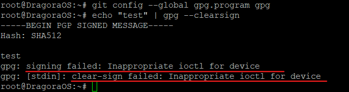
Если сообщения не подписываются, и возникает ошибка “gpg: signing failed: Inappropriate ioctl for device”
Немного погуглив, исправляем так:
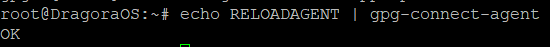
Отлично! Продолжаем:
Добавляем первоначальный конфиг в /root/.gnupg/gpg.conf:
keyid-format 0xlong
throw-keyids
no-emit-version
no-comments
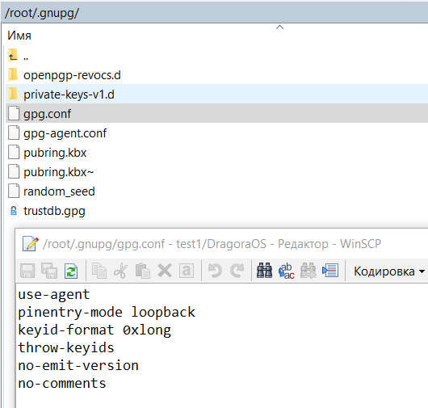
Теперь выбираем, каким ключом будут подписываться наши коммиты
проверяем:
gpg -k
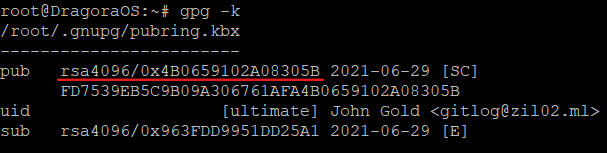
возьмем rsa4096/0x4B0659102A08305B:
git config --global user.signingkey 0x4B0659102A08305B
git config --global commit.gpgsign true
Создадим git репозиторий
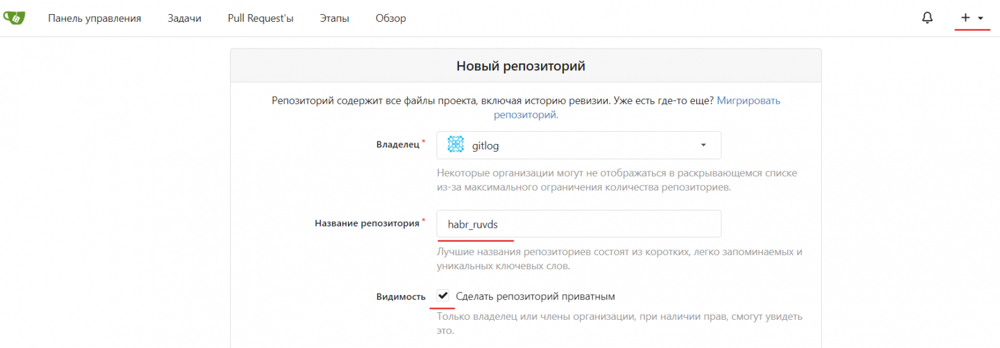
▍Настроим связку PASS-Gitea на локальной машине
Инициализируем гит:
pass git init
Добавляем тот путь, который нам показал Gitea после установки Gitea (заменив дефолтный путь 127.0.0.1:22022 на имя домена):
pass git remote add origin https://zil02.ml/gitlog/habr_ruvds.git
Коммитим изменения. Для того чтобы закачать изменения, пользуемся стандартным методом.
cd .password-store/
git add .
git commit -m “123”
git push -u origin master
Если все сделали правильно, должно получиться следующее:
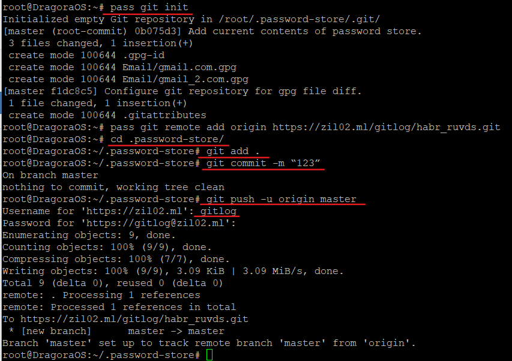
Открываем репозиторий:
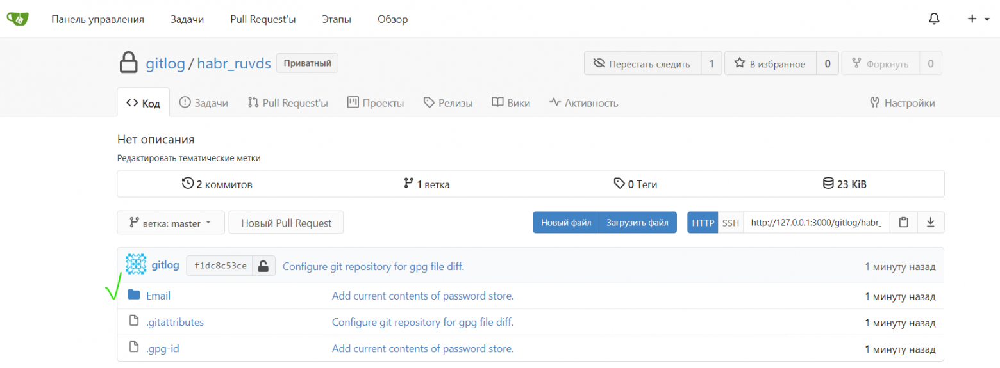
Ура! Все изменения из нашего православного менеджера паролей PASS синхронизировались с нашим Gitea. (Все содержимое папки * /.password-store)
▍Установим Pass for iOS
Официальный сайт приложения — mssun.github.io/passforios
Экспортнем public и secret ключ и перенесем на iPhone:
gpg --export -a 0x4B0659102A08305B > 8305Bpub.gpg
gpg --export-secret-keys -a 0x4B0659102A08305B > 8305Bsecret.gpg
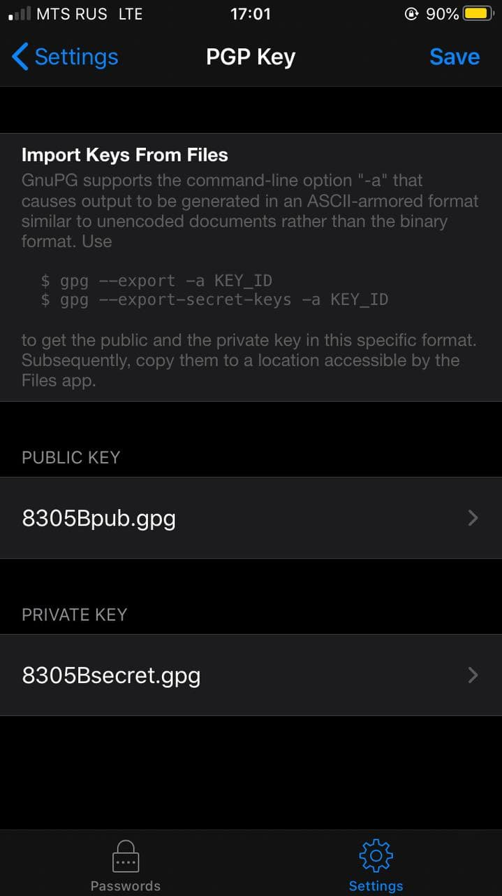
Пропишем настройки git репозитория:
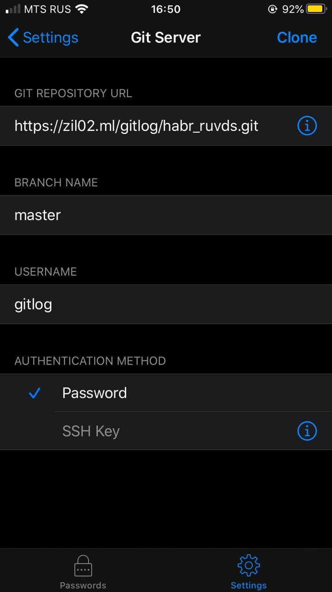
Детальные скриншоты с настройками
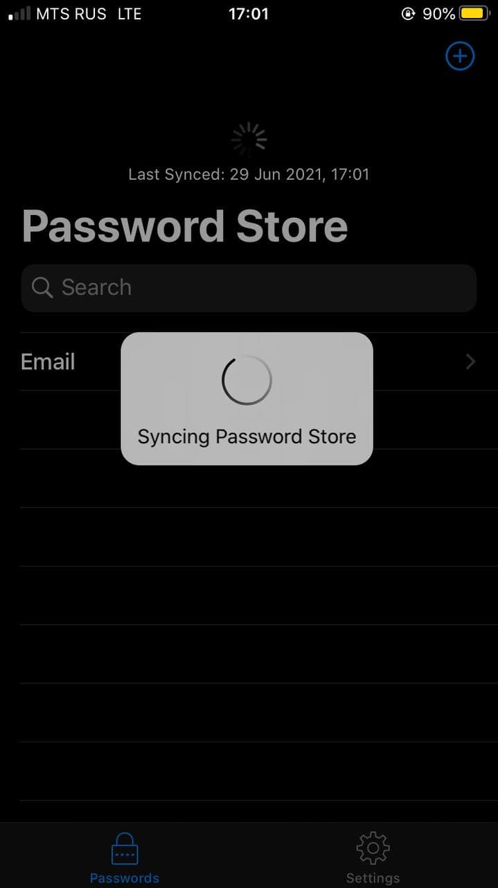
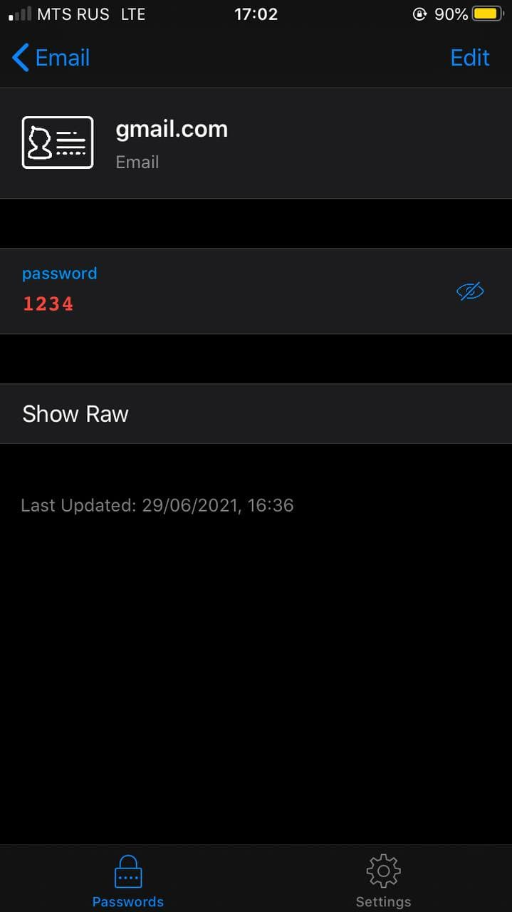
Поздравляю Вас, мы справились на Отлично!
В этой пошаговой статье мы с Вами установили собственный git репозиторий, пакет GPG и менеджер паролей PASS на локальную систему (Linux) и на iPhone (Pass for iOS). Теперь мы можем создавать, изменять пароли с PC, айфона, синхронизировать изменения через git, использовать автозаполнение логинов-паролей на iPhone в браузерах для входа в различные онлайн сервисы.
Можем хранить любые данные помимо паролей.
Очень простой формат организации и хранения паролей дает нам достаточно широкие возможности:
Менеджер паролей PASS имеет большую поддержку со стороны сообщества. Есть бесшовная синхронизация через git между экземплярами PASS на компе, ноутах, телефонах. Существуют реализации программы для Android и iOS, плагины для веб-браузеров Chrome и Firefox, графические клиенты для Windows, Mac и Linux, расширения для Alfred, dmenu, rofi и Emacs, скрипты для импорта паролей из других менеджеров паролей!
PASS покрывает возможность хранения всей базы паролей на своем сервере/локальном компьютере/флешке/диске.
Поддерживается возможность делать быстрый backup паролей. Вы вольны выбирать какой тип шифрования использовать для сокрытия ваших паролей и любой другой приватной информации!
Вы можете придумать и реализовать свою структуру хранения паролей с категоризацией!
В первую очередь этой статьей хотел вызвать интерес к открытому программному обеспечению и правильному хранению Вашей персональной информации! Хранить пароли в месте, защищенном от хитрого взора корпораций, считаю хорошей практикой!